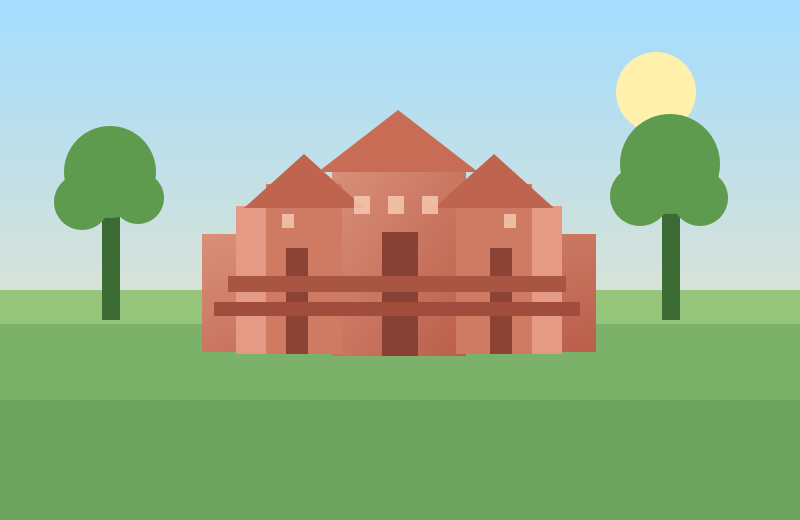
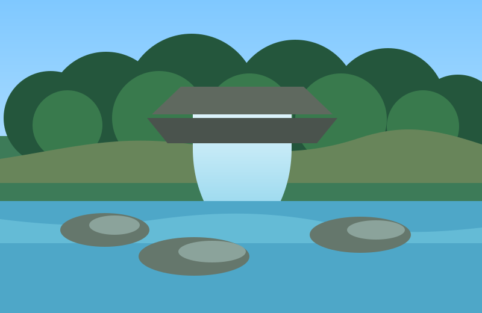
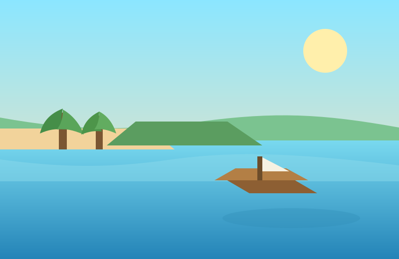
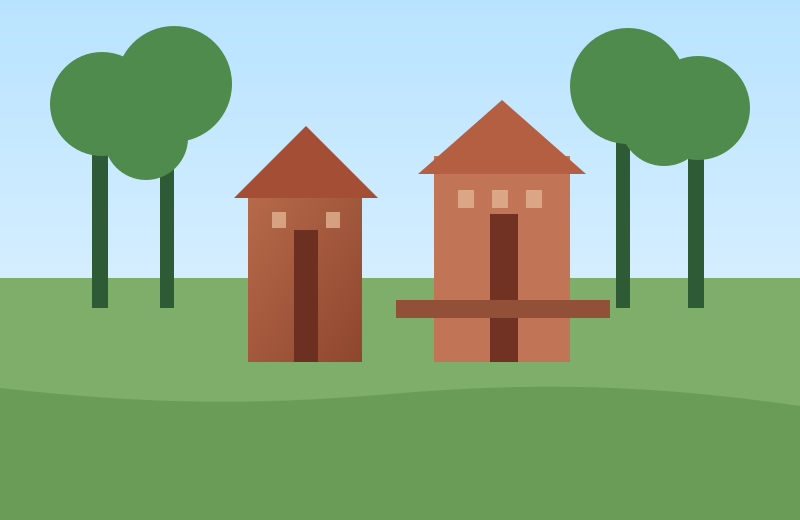

Phnom Penh
Phnom Penh
The Royal Palace of Cambodia
A must-visit attraction in Phnom Penh with Khmer architecture, gardens, and cultural history at the center of the capital.
Plan beautiful escapes, find hidden gems, and make every journey memorable.
Explore city landmarks, island escapes, and cultural highlights across the country.
Phnom Penh
A must-visit attraction in Phnom Penh with Khmer architecture, gardens, and cultural history at the center of the capital.
 Angkor Wat
Angkor Wat
Located in Siem Reap, Cambodia, this temple complex is one of the country's most important historical landmarks and a core stop for visitors.
 Koh Rong
Koh Rong
Cambodia's second-largest island near Sihanoukville, known for bright water, beach stays, and a slower tropical pace.
 Kampot
Kampot
A highland retreat in Kampot province with cooler air, scenic roads, and broad views that break away from the coast and city heat.
A strong stop in Phnom Penh for Khmer sculpture, historical artifacts, and a calmer city visit between major landmarks.
 Phnom Penh
Phnom Penh
 Kampong Speu
Kampong Speu
A quieter mountain destination with forest scenery, lodge stays, and day-trip routes for travelers wanting a break from busier tourist centers.
 Kratie
Kratie
A calmer Mekong stop known for river views, boat rides, and chances to spot Irrawaddy dolphins outside the busier tourism loop.
 Siem Reap
Siem Reap
A strong add-on from Siem Reap for floating-village scenery, lake travel, and a different look at daily life on Cambodia's largest freshwater lake.
 Phnom Penh
Phnom Penh
A city stop for riverfront walks, local markets, and capital landmarks when you want a broader Phnom Penh view beyond palace and museum visits.
 Battambang
Battambang
A popular countryside experience for travelers who want rural scenery, slower overland stops, and something more local than the usual city landmark route.
 Kep
Kep
A smaller coastal getaway with easy beach time, fresh seafood, and a gentler pace for short relaxing trips in the south.
 Preah Vihear
Preah Vihear
A dramatic hilltop temple known for long approaches, historic stone structures, and wide views for travelers focused on heritage and remote landmarks.

Siem ReapA pink sandstone temple near Siem Reap, known for detailed carvings and a more intimate heritage stop outside the biggest Angkor crowds.

Siem ReapA forested plateau with waterfalls, river carvings, and a cooler day-trip mood for travelers wanting nature alongside temple routes.

KepAlso called Rabbit Island, this short boat ride from Kep offers calm beaches, simple seaside stays, and a quieter coastal rhythm.

Kampong ThomAn early temple complex with brick towers, shaded forest paths, and a quieter heritage experience between Phnom Penh and Siem Reap.
No destinations matched your search.